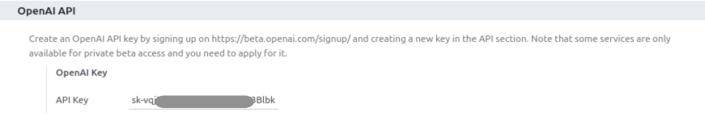
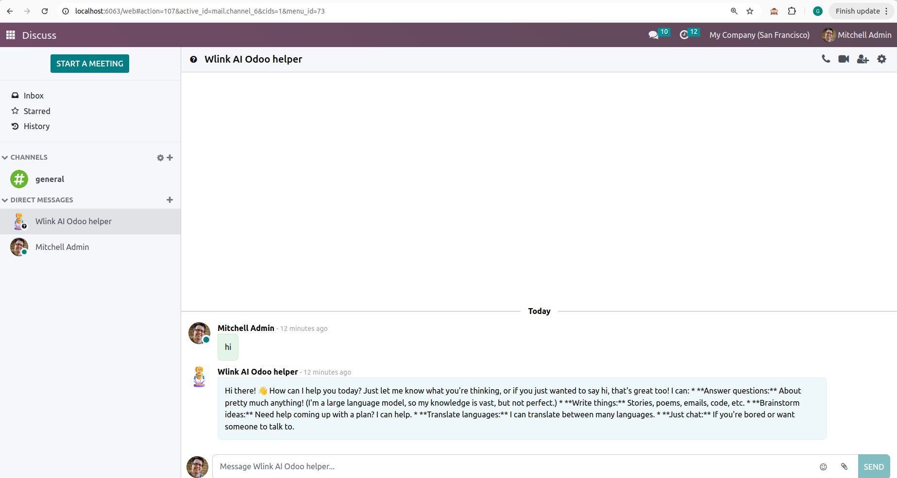

With the integration of Wlink AI of Geek Tech Sol, this module allows you to add an AI Bot user to your Odoo chat system. This powerful tool can assist you in a variety of ways, such as answering customer inquiries, providing support, and even automating some of your business processes. With its ability to understand natural language and provide human-like responses, the Wlink AI Chatbot for Odoo can help you improve customer satisfaction and streamline your operations.
This module allows you to add an AI bot user to your Odoo chat system, similar to the functionality of ChatGPT. The bot is powered by the OpenAI API, and can respond to a wide range of questions and requests. The module is easy to set up and use, and can be a valuable addition to any Odoo system.
To set up the module, you will need to create an account on https://openrouter.ai/. Once you have an account, you can create an API key on the API keys page. Once you have your API key, you can enter it in the settings of the module in your Odoo system.

To use the module, simply open a chat in your Odoo system and start talking to the AI bot. The bot will respond to a wide range of requests and questions, and can be a helpful resource for your team. You can also access the bot from the "Discuss" menu in your Odoo system.

This module requires the Python client library for the Wlink Ai API, which can be installed with the following command:
When you install the Wlink Ai Chatbot for Odoo module, you become an experienced Odoo consultant. You will no longer need to rely on others to answer your questions. This AI system allows you to quickly and accurately respond to any question related to your Odoo setup, configuration, or usage. With the OpenAI Chatbot, you can easily navigate the complex and ever-changing landscape of Odoo, ensuring that your business stays competitive and efficient. The module's advanced natural language processing capabilities allow you to communicate with the AI in a way that feels natural and intuitive, making it easy for you to find the information you need and take action on it. Whether you're a small business owner, an enterprise user, or a developer, the OpenAI Chatbot for Odoo is an essential tool that can help you streamline your workflow, increase productivity, and make better decisions.
In addition to this library, the module also requires an active internet connection, as it communicates with the OpenAI servers to generate responses. Please note that usage of the OpenAI API may incur charges, so be sure to check their pricing before using this module.
 1.svg)